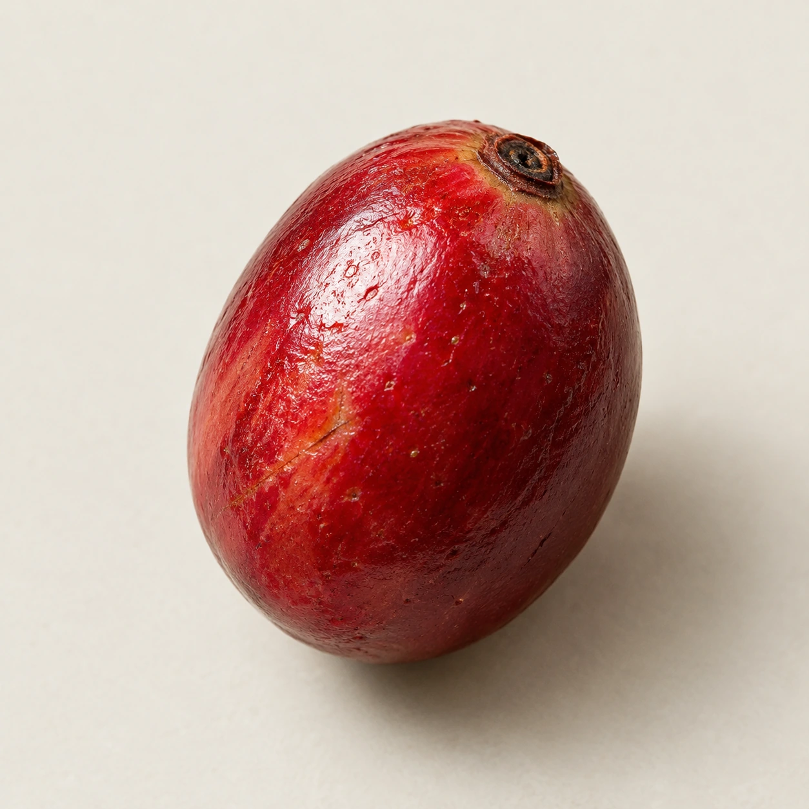
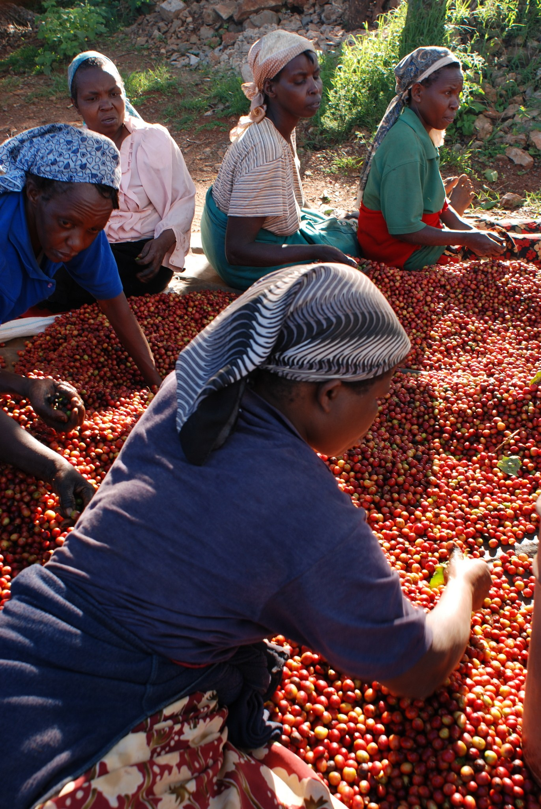
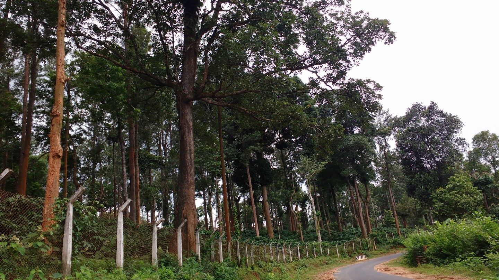
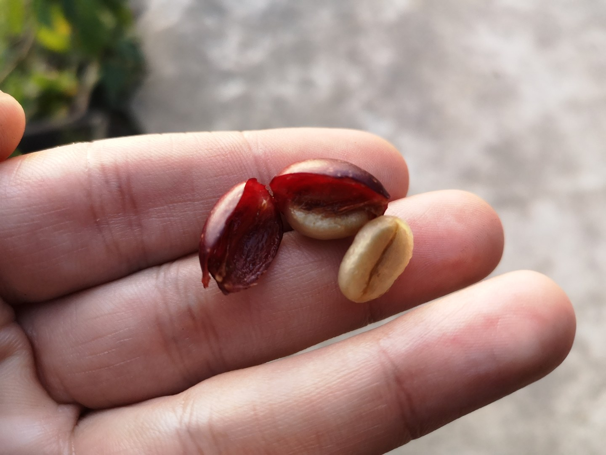
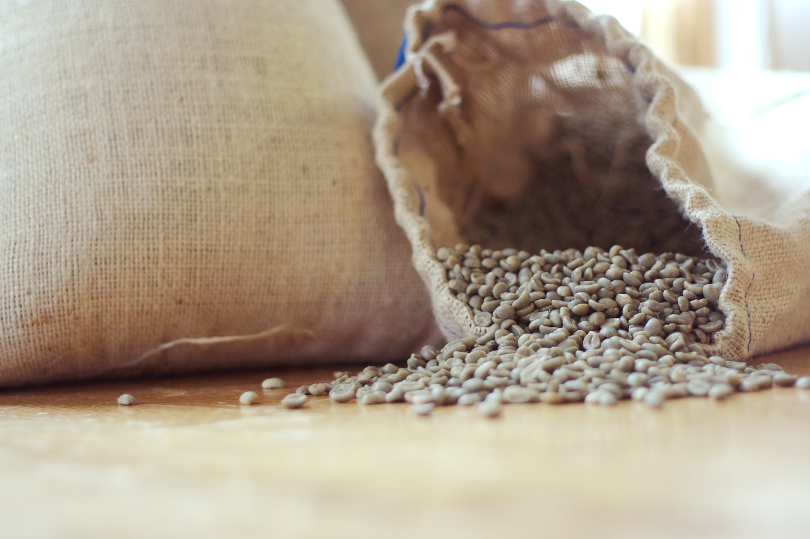
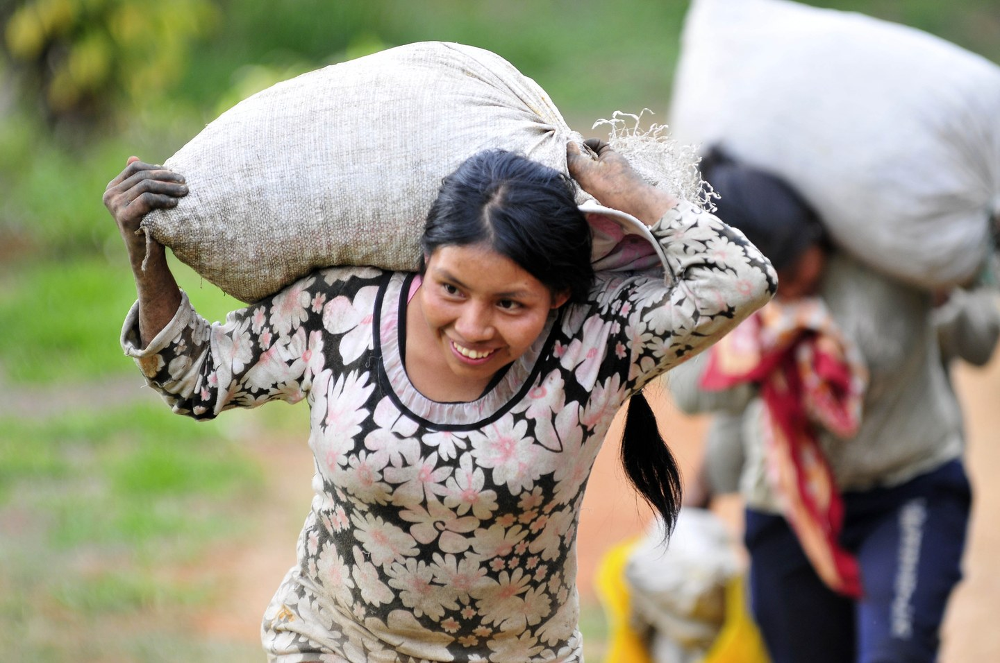

前面，人们安排变化。现在，他们努力把已经得到的，好好交到下一双手里。
整理、包装、储存、搬运。品质不会因为装进一个袋子就停在原处。合适的条件与认真的检查，关系到它以怎样的状态抵达。

我们常说的咖啡“豆”，是咖啡果实中的种子。熟悉的褐色与烘焙香气，还要等它经过后来的一段路。
这段路上，有人促成变化，也有人努力保护已经得到的。先从它生长的地方开始。
一个地名，是认识咖啡的起点。
走近一点，还能看见人的选择。


等到收获，果实来到人的手边：哪些留下，哪些被挑出，选择开始变得具体。分选台上有很多红色果实，人的手却必须一颗一颗地看。
同一个品种换到另一个地方，杯中表现可能改变。品种与环境需要放在一起看；采后的处理、储存与烘焙，又会继续参与这段旅程。来源 ↗
“产地”在包装上只是几个字。走进这几个字，就会遇到具体的树、环境，以及每天在这里工作的人。

离开枝头以后，
让哪些外层，
陪着它一起干燥？
日晒、水洗、蜜处理。
把比较停在同一个时点，三个名字就有了可见的区别。
去皮、去除黏液、安排干燥，我们看见的是材料与步骤。微生物活动和种子内部的变化，不会完整地写在外观上。一个处理法名称，仍不足以预测每杯咖啡的味道。
前面，人们安排变化。现在，他们努力把已经得到的，好好交到下一双手里。
整理、包装、储存、搬运。品质不会因为装进一个袋子就停在原处。合适的条件与认真的检查，关系到它以怎样的状态抵达。


核对原料状态，准备交接。包装是保护的一环，不能单凭外观判断其防护性能。
留意环境、虫害与污染风险，减少流通过程中不必要的品质劣变。
检查是否出现异常，确认原料交到下一位处理者时的状态。具体路线与流程会有差异。
热改写了种子。
研磨之后，水与它相遇。
那些可以进入水里的，开始了最后一程。
萃取时，水还在和咖啡粉接触。这里的加水实验已经移走粉渣：杯中咖啡来源的溶解物没有增加，只是分布在更多液体里。
浓度能回答“这一杯里有多少比例的溶解物”。它仍不能替你决定，这一口是否合你的心意。
土地、分选台、袋子、热与水。
刚才看见的那些工作，
最后都收进了这一杯。
下一口，可以慢一点。
先说你感到了什么，再说你喜欢什么。
温度、香气、酸甜，或一瞬间的口感。
一个熟悉的东西，也可以暂时找不到名字。
你的偏好，可以和包装上的描述不同。
杯子还是那只杯子。
你已经看见了更远的地方。
真实照片保留各自的拍摄来源、地点与年份。它们共同帮助观察，并不构成同一批咖啡的跟拍。图片在页面中有响应式裁切；本轮没有对这些照片再调色。
处理与烘焙中的六张近距物件，以及开篇与结尾的杯子静物由 AI 生成，是为本作品制作的视觉示意；它们不对应某一批真实咖啡。组织去留由独立图解与文字说明；烘焙关键帧的过渡不代表真实温度曲线。
本作跟随代表性的物质变化，保持基本准确和自洽。三条处理路线是常见做法的概括，实际步骤与外观会有差异；工艺名称与豆色都不能单独保证风味或品质。
页面的资料链接需要网络；正文、摄影、七张生成静物与全部互动均随作品保存在本地。